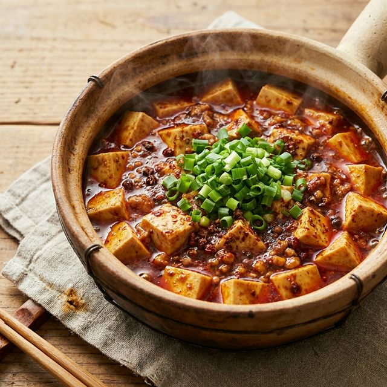

食材准备
- 主料： 嫩豆腐 1块 (约400g)
- 辅料： 牛肉末/猪肉末 100g
- 调料： 郫县豆瓣酱 2勺
- 调料： 花椒粉 1勺
- 调料： 辣椒粉 1勺
- 调料： 蒜末、姜末 适量
- 调料： 豆豉 少许
- 调料： 水淀粉 适量
- 装饰： 青蒜苗/葱花 适量
烹饪步骤
处理食材
豆腐切成2厘米见方的小块。锅中加水烧开，放入少许盐，将豆腐焯水1-2分钟，捞出沥干备用（这一步可以去除豆腥味，也能让豆腐不易碎）。
炒肉末
热锅凉油，下入肉末中小火煸炒，炒至肉末变色、酥香，盛出备用（也可以留在锅边）。
炒底料
锅中留底油，下入蒜末、姜末、豆豉爆香，再放入郫县豆瓣酱炒出红油，加入辣椒粉炒匀。
烧制
加入适量清水或高汤（没过豆腐即可），煮开后滑入豆腐，中小火烧煮3-5分钟，让豆腐入味。期间轻轻晃动锅子，不要用力翻炒以免豆腐破碎。
勾芡出锅
分数次淋入水淀粉勾芡，使汤汁浓稠紧紧包裹在豆腐上。最后撒上花椒粉和青蒜苗/葱花，即可出锅装盘。